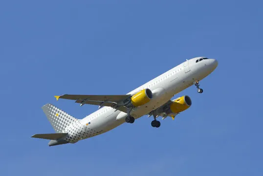

los aviones han sido los vehiculos mas revolucionarios de la historia, permitiendonos alcanzar los cielos, en esta pagina te enseñaremos como es que uno vuela
cuando el avión se mueve, las alas generan sustentación gracias a un efecto causado sobre su perfil alar (sección transversal que corta a un ala)
podemos entender este efecto con el principio de bernoulli el aire que pasa por encima del ala se acelera debido a que la curvatura de esta misma
es mayor por arriba que por debajpo de ella y el aire que pasa por debajo pasa a una menor velocidad, como sabemos una mayor velocidad significa
una menor presión, osea que abajo hay mas presión que arriba del ala generando una fuerza hacia arriba que mantiene al avión en el aire
para generar el movimiento en el avion se usan los motores, llamados turbofan, los cuales succionan aire desde la parte frontal del avión, lo
comprimen con un compresor de helice, lo mesclan con combustible en un componente llamado combustor y lo hacen encender, cuando la mezcla de aire
y combustible se enciende se expande rapidamente y este chorro de aire sale despedido hacia atras a una velocidad enorme, gracias a las
ecuaciones de newton sabemos que cuando empujamos algo hacia atras generamos la misma fuerza en el sentido opuesto así este principio se aplica
para generar empuje y hacer que el aire pase a travez de las alas